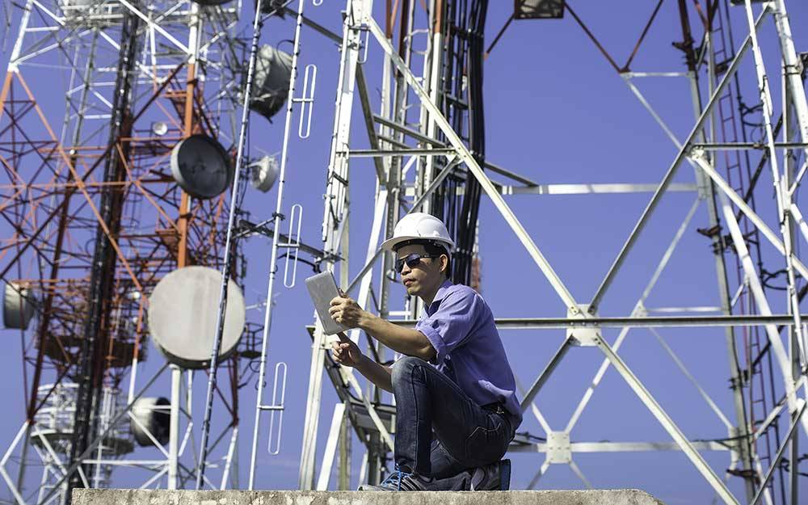

Name of Department: Department Of Electronics And Communication
Mission Statement:
M1-To inculcate technical knowledge and professional skills through contemporary curriculum, effective learning with continuous evaluation.
M2-To provide exposure of modern engineering tools and current engineering practices.
M3-To serve the people of state and nation by providing quality education embedded with all round development.
Vision Statement:
To build a department of global repute for providing technical ability and professional skills in the field of Electronics & Communication Engineering.
Brief Profile of Department:

Department of Electronics and Communication incepted in year 2010 with students intake of 45.Course is three years full time having six semesters with minimum admission eligibility of Class X pass or Class XII pass in Science stream for later entry direct into 2nd year. Course is approved by AICTE and certified by ISO 9001:2008.Certificate).Department has competent and experienced faculties with various expertise in core subjects. Students have been given State of art facility to groom them in all recent and upcoming trends in technology. Revised and industry oriented curriculum developed under the consultancy of National Technical Teachers Training and Research (NITTTR) Kolkata is implemented and the delivery is in English medium. Students are sent for three industrial visits during course duration and have to execute three projects. Department conducts Seminar,Workshop,Guest Lecture and other activities periodically to update students on various upcoming trends in technology. Academic functioning of department is governed by Course In charge (CIC).